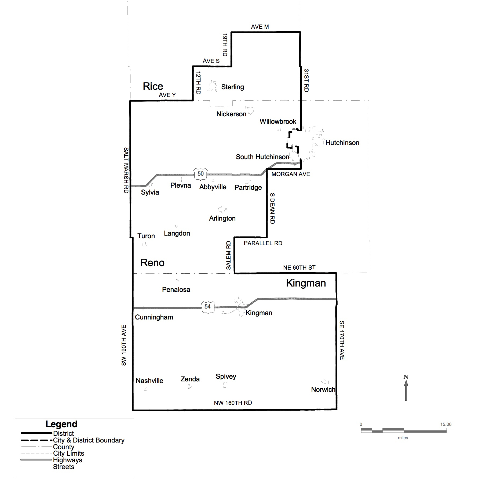
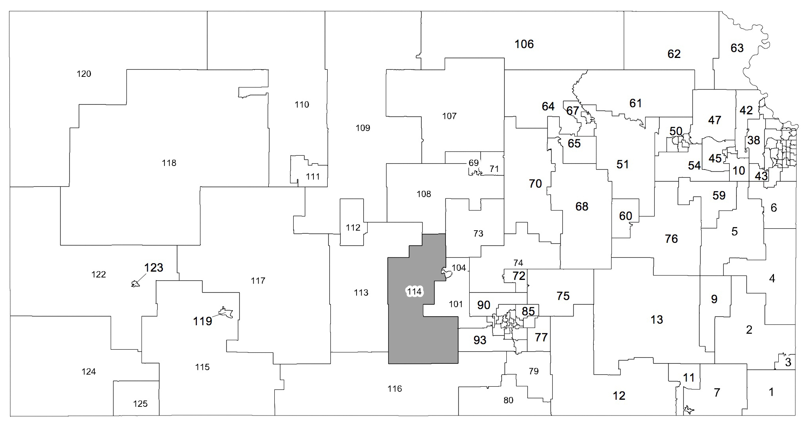

About Kansas House District 114
The 114th District of the Kansas House of representatives was created in its present form by the redistricting undertaken in 2012. The 114th is an area consisting of mostly rural areas of south central Kansas including Kingman County, the western portions of Reno County and the south eastern portion of Rice County. Cities included in this district are Abbyville, Arlington, Cunningham, Kingman, Langdon, Nashville, Norwich, Nickerson, Partridge, Penalosa, Plevna, South Hutchinson, Spivey, Sterling, Sylvia, Turon, Willowbrook, Zenda, Willowdale, Waterloo, St. Leo, and Murdock.
The demographics of the 114th District note a total population of 22,632 with a population of voting age individuals of 17,299. 29.2 % of the population of the 114th is between the age of 45 to 65 with those over age 65 reflecting 18.8%. Interestingly the third largest age demographic in the district is 6 to 17 at 16.4%, So while these young people are not eligible to vote in the upcoming election, those who are eligible are representing the future of our communities and young people.
However, this list of cities and demographics does not truly disclose the vast area of people included in the 114th. A review of the district reflects that 15 school Districts are included fully or partially in this district. Those included are: USD 268-Cheney; USD 308-Hutchinson; USD 309-Nickerson; USD 310-Fairfield; USD-311 Pretty Prairie; USD 312-Haven; USD 313-Buhler; USD 331-Kingman; USD 332 Cunningham; USD 361 Anthony/Harper; USD 376-Sterling; USD 401-Chase; USD 405-Lyons; USD 444-Little River; and USD 448-Inman. So whether you are from the northern part of the district and are a Lion or a Black Bear or from the south and claim allegiance to the Eagles or the Roadrunners, this district is where you get your representation in Topeka.
Whether you live in a city, small town or on a farm, the 114th District of the Kansas House of Representatives represents you.